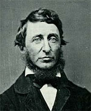

|

|

|
|
|
Essayist, poet, naturalist, educator and lecturer, Henry
David Thoreau was born on July 12, 1817 in Concord,
Massachusetts. His father, John Thoreau, was a pencil
manufacturer. Henry attended Concord Academy and Harvard
University, where he was graduated from in 1837. Thoreau
worked as a public school teacher to supplement his family's
income and pay for his college education. Later, he opened a
day and boarding school from the family home. Shortly after
returning from Harvard to Concord, Thoreau met fellow
intellectual Ralph Waldo Emerson. They soon began a
remarkable relationship based on their work in the important
literary movement of Transcendentalism.
The new movement was mainly comprised of young men and
women from New England who rejected formal religion for what
they called "The Transcendental Law." This was the moral law
through which man discovers for himself the nature of God.
Transcendentalists like Thoreau believed that God was
embodied in a spirit whose essence could never be defined or
contained by tedious, learned texts or rules. Rather,
transcendentalists advised looking to the fluid, energetic
and "transcendental" unity of life. They celebrated a
somewhat vaguely defined, but liberating nonetheless,
"truth" whose essence could only be discovered through the
natural world. The simple life was celebrated, although few
adherents to the movement took that as far as Thoreau.
Thoreau began publishing poetry and essays regularly in
the Transcendentalist magazine The Dial, and from
1845 to 1847 formed the basis for eighteen more essays
entitled Walden; or My Life in the Woods in Concord,
Massachusetts when he moved to a cabin on Emerson's property
near Walden Pond in order to live as simply and as close to
nature as possible. Midway through his stay there, Thoreau
refused to pay the local poll tax because of his opposition
toward a government that condoned slavery and had launched
what he considered an imperialist war against Mexico.
Thoreau's one night in jail as well as his thoughts on the
subject fueled the essay Resistance to Civil Government,
or Civil Disobedience (1849) in which he espoused the
need to live up to higher ideals than those of civil
society-even if this meant breaking laws in the process.
"The law will never make men free," declared Thoreau, "it is
men who have got to make the law free."
Thoreau continued his own private form of social activism
after he moved out of the woods. He wrote essays and
delivered lectures such as "Slavery in Massachusetts" (1854)
in support of the abolitionist cause. He explained his ideas
on the role of the state: "There will never be a really free
and enlightened state until the state comes to recognize the
individual as a higher and independent power...and treats him
accordingly." After John Brown's failure to incite a slave
revolt after his raid on Harpers Ferry, Thoreau delivered "A
Plea for Captain Brown" (1859) in order to exonerate Brown
in the eyes of the law for living up to a higher ideal.
Brown was hanged, however, and it is believed that the
incident shocked Thoreau so that it hastened his own death.
After spending a few years beginning a study of the
plight of Native Americans, Thoreau, who had suffered from
the ill effects of the disease tuberculosis for many years,
finally died of its effects on May 6, 1862. His final
works, The Maine Woods (1864) and Cape Cod
(1865) were published posthumously.
Source: Malcolm J. Rohrbrough, ed., Facts on File Encyclopedia of American
History: Expansion and Reform, 1813 to 1855 (New York: Facts on
File, 2003), 342-343.
|